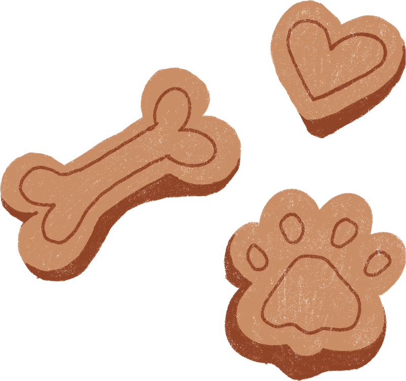

Ayudemos a reunir a las familias con sus mascotas
Registra una Mascota PerdidaCompleta el formulario para que los datos de tu mascota sean visibles y las personas puedan ayudar a encontrarlos
Reporta una Mascota Encontrada
Completa el formulario para compartir los detalles y ayudanos a generar encuentros
En nuestro país alrededor del 78 por ciento de los argentinos tiene mascotas en su casa
Se estima que al menos 100 perros y gatos se pierden diariamente en la Argentina
Cerca de 490.000 perros y 368.000 gatos están al cuidado de los hogares de Buenos Aires
Datos sobre tenencia de mascotas por comuna:
- Las Comunas 4, 8, 9 y 10 tienen más perros
- Comunas 5, 10 y 12 tienen más gatos
- En la mayoría de las comunas, hay más perros que gatos por persona, excepto en la Comuna 5.

Que nadie falte en casa
Horas y horas navegan en páginas de internet aquellas familias que pasan por la desgracia de haber extraviado a su mascota.
Algunas van más allá y hasta empapelan el barrio con la foto del perrito o gatito, con la esperanza de dar con su paradero.